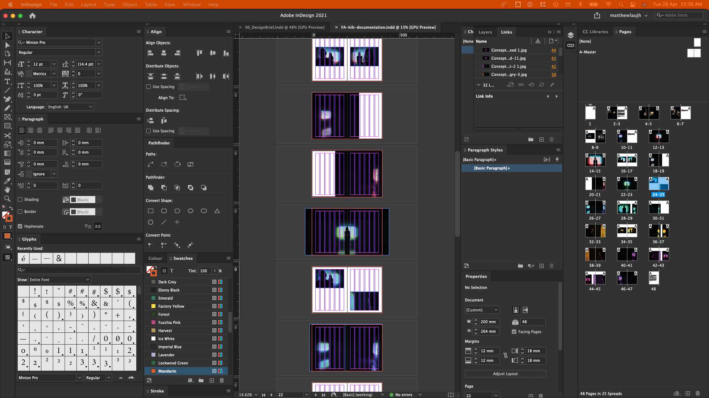

// Semester Two Week Fifteen: 18.04.22 - 22.04.22
Graduation Project:
// 18.04.22 - Documentation Week Live on Matthew TV.
// 18.04.22 - Exhibition catalogue.
// 19.04.22 - 20.04.22 - Editing Concept Reel and Exhibition View video.
// 21.04.22 - Project Microsite.
// 22.04.22 - Exhibition tear Down.
// 22.04.22 - Design Brief redux.
// 18.04.22 - Documentation Week Live on Matthew TV.
So after documenting the exhibition last week it was time to prepare all the documentation. I remember Andreas mentioning that to put it simply through a fashion analogy, if my artefact and the experience was the garment, the exhibition is the runway show, so what's next for the documentation. Documentation photos and videos were a given, but how do i present them.
So the outcomes I came up with were to firstly make an exhibition catalogue to showcase the photos, along side that I would have an exhibition microsite to go along with it. These two outcomes simulated how an exhibition would kind of work in a real world scenario where a) the catalogue was the printed matter audiences could pick up to learn more or keep as a memento and b) the microsite served as an explainer for what's happening as well as it's good to feature videos so potential audiences could first check out what's going on before actually going down to an exhibition.
18.04.22 - Exhibition Catalogue.
So based on the video and photos that I shot during the documentation day, as mentioned earlier I had two narratives in mind. First the exhibition view and secondly the concept. So the catalogue was kind of the same as those. It starts with the introduction followed by the two interactions. Although I decided to put priority on the second interaction and have that occupy 3/4 of the pages.
For the size of the book I surveyed a couple of publications that accompanied exhibitions that I had around my room (Im sort of a hoarder like that). I ultimately went with 200mm w x 264mm h (closed) as the format for the book. I realised that if I made the book too small around the 100mm x 150mm range, it felt more like a reader than a photo catalogue, so that was not an option. While if I had gone with a bigger size, it did not really make sense as a book that was meant to be kept as memento, it would feel too much like a newspaper/tabloid or like a large format folded brochure. I felt that the size that I had chosen was a nice ratio for laying out images within a grid, or when doing full bleeds. It was a size that (when coupled with the right paper bulkage), would make each flip feel intentional and people wouldn't just speed flip through. It allowed for purposeful flipping with enough space to allow readers to see the images.
Image: Flow of the book.
With the book sized settled I intentionally picked out Colorplan by G.F Smith which was available at RJ Paper. I knew from the get go that I wanted to use this paper, especially since I was printing at KHL, where they do digital offset printing. I've printed images on this paper before in the past and when printed using digital offset, it holds up really well and does not have any patchy-ness or weird tints. Also it's grammage and bulkage were enough to add to the idea that users had to intentionally flip through the pages. The paper's kind of textured which gives it a nice feel when holding, but also not to the point where it's too visible with the print. The choice of binding also helps with this. I went with a limp sewn, so that the signatures are first sewn before they are glued together at the spine. This allows the book to be opened flat so that I could put full bleed images with subjects in the middle of the page without worry. (But when I got the book from the printer's, seems like they used just a bit too much glue so some signature are tighter than others, making some pages stick, but it's not too bad compared to bindings like perfect bind).
I also initially planned to print the book jacket using Colorplan but I wanted to have SPOT UV (Scodix) print for the title, but after a couple rounds of test prints by the printer, the paper could not hold the ink and it was sinking, even after trying to coat the paper, so I had to switch to using a more spot UV friendly paper choice supplied by the printer. I wanted the spot UV treatment for the title on the cover because I didn't want to take away from the image I had chosen to use as the cover. Spot UV gave it a slightly raised bump for texture as well as a slight gloss so that the text was still legible. It also added a more premium look to the catalogue.
Images: Exhibition Catalogue
// End of this Section.
19.04.22 - 20.04.22 - Editing Concept Reel and Exhibition View video.
The concept reel was quite straightforward to edit as we shot the clips in sequence. The only struggle was timing the cuts, I had to time the expression of the faces and the transitioning of the lights to ensure a smooth transition. That was especially hard considering that the lights were pulsating so it was difficult to time the right "strength" or "glow" of the lights. Same case for the exhibition view. I think it was a good call that we decided to shoot the clips in sequence and ensured that we had at least three takes per clip so that I could find the right clips to use.
I just regret not doing it earlier, so that it would not have been a rush to edit everything. But due to the circumstances around setting up the exhibition and coordinating when I could get the talents down to shoot, it was just unfortunate. Another regret was the timing of facial expression changes. While shooting the clips I timed 3 seconds per expression, but that led to shorter coloured clips, which also made editing slightly more difficult. In hindsight I should have timed it by number of pulses, so that colours would not be changing mid pulse.
However as there are bad things, there are also good things. Well mainly that the video turned out well (I hope). Also I got to refresh my video editing skills, haven't done that in awhile. It was a good practice in making sure that the cuts are consistent, the lighting is consistent and also choosing the right audio track. Although we shot in a controlled environment, due to the changing colours of the lights, the lighting on the faces aren't as good as I hoped. But nothing a little editing can't fix!
Images: Editing of Video.
I'd also like to mention the opening title sequence, as much as I think the video isn't too bad, I actually really liked how I managed to simulate a pull focus effect using just abit of opacity, scale and blur effects on the title sequence. I thought that added to the whole look of the videos. Also the framing of the shots made it perfect for inserting informational text at the end of the video, really please with how that turned out.
// End of this Section.
21.04.22 - Project Microsite.
While I was editing the video, I realised that due to the static nature of the framing of each clip, they were just right to use a moving backgrounds for the microsite to accompany the text. So the idea for the website was to provide information on the exhibition, so the content was taken straight from the information panels in the exhibition and placed with corresponding footage as the background. I was also glad that I recorded some ambient sounds of the space, just white noise type stuff and added it to the mix of the video, it really helped make the music less sterile.
I built the website on cargo.site cause although I would love to code it out myself, A) I'm running out of time and well B) I'm not confident in responsive coding yet at this point in my coding journey and this is a website that I'd like to keep live for at least the year alongside my portfolio, so I think using cargo was the best option for these reasons. I wanted it to serve as like a supplement to my portfolio and considering how the works would be presented at the LASALLE show, most people will be viewing this on mobile. So using cargo allows me to account for that.
Images: Cargo rejecting my code.
Now for the downside of cargo, I really wanted to make the sections that feature the videos to be fullscreen and have the mouse cursor turn into text to serve as a call to action, something similar to this reference I found online where there's spinning text around the cursor, however I tried cargo a bunch of times with different custom CSS + JS codes but cargo was rejecting the code for some reason. I read on it's documentation and it says that it did allow for custom code to be inject and I have done it before for compendium last year and my portfolio but for some reason it's rejecting this instance of code. My suspicion is that it's clashing with some underlying code that they're not showing to me, but I guess that's the limitations of using a website builder, I'll never know.
// End of this Section.
// 22.04.22 - Exhibition tear Down.
Now this was a real bittersweet day. On one hand I was so glad that the exhibition was over, the process of setting up each time I needed to run it was really tiring and also things were starting to let's say "not work as well" but I was also so sad to know that this was most likely the last time this exhibition would be set up. I'm not showing it during LASALLE show, so who knows when this would come to life again.
This process also led me to realise how inconvenient the flow of movement was in LASALLE. I had to bring the installation on a whole journey around the school to get it from Gallery 1 in the basement back to D301. Transporting it down was easier as I had it in parts and it could fit in the main lifts but now that it was one big piece, it was difficult. But also luckily I had Shaiful and Hani to help with transporting it back up and also big thanks to Rezwan from ICAS for lending me the big trolley that saved us a couple of trips. I also just realised how many parts there were to this, the amount of wires, the amount of tech, it's actually a a little insane.
Images: Journey the installation took to get back to D301.
But honestly, I don't regret this at all, creating the artefact at this scale. My friends got to try it out and everyone had a fun experience and I got good documentation, so that's what matters most to me whenever I think about all the pain points of this projects, it's all worth it in the end.
// End of this Section.
// 22.04.22 - Design Brief redux.
We meet again, my enemy, the design brief. But you're not that scary this time around. The project did not change much although the deliverables changed drastically from the start of the term. But the general idea remains the same so it just took a little bit of rephrasing to get things phrased right.
// End of this Section.
// THIS IS THE END OF EVERYTHING.